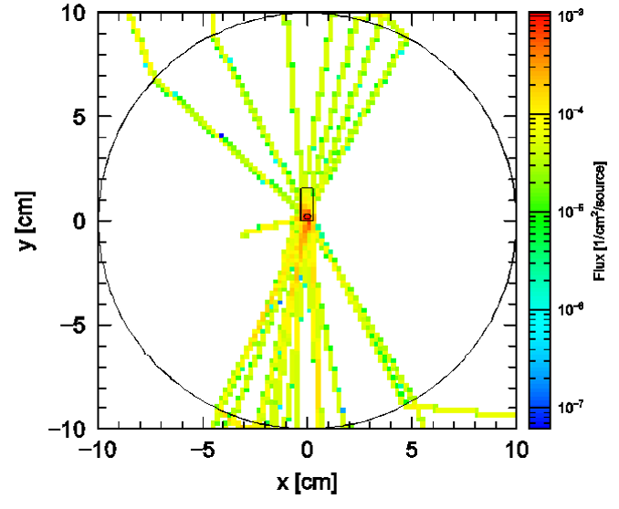

Radiation Transport Simulations
MCNP
Simulation of a Fastscan WBC for Calibration Purposes
|
The effect of phantom size on calibration curves and source placement on the detected radiation is investigated. The radiation transport code MCNP6 is being used to run anthropomorphic phantoms of different size chest wall thicknesses and subject sizes so as to provide more realistic calibration curves. Back-to-Front ratios of dose position are also being simulated. |
MCNP Simulation of Offline Core Dose in CANDU Reactors


We are currently working on developing a next generation inspection system for CANDU pressure tubes. This next generation inspection system will allow for multiple channels to be inspected simultaneously, thereby decreasing outage time. The radiation transport code MCNP6 is being used to simulate dose rates throughout the core, which can then be used to predict component lifetimes for the inspection system (core model shown on the right).
Examination of Secondary Electrons Generated by Encapsulated Gamma Sources to Improve Contact Dosimetry Estimates
It is crucial to obtain more accurate contact dosimetry estimates for sealed sources, that better match observed physical symptoms.To solve this problem the surface electron and gamma components of the contact dose rate, for a sealed source will each be measured experimentally. A large magnet will be used to bend the surface electrons away from the gamma dose measurement. Simulations using Monte Carlo radiation transport code PHITS will also be used to aid in experimental design and compare with experimental results.
Packaging Simulation of Spent Fuel for Transportation
The
Used Fuel Transportation Package (UFTP) is a Type B
transportation package designed to transport up to 192 bundles
of used CANDU fuel. The package design was first certified in
1985 by the Atomic Energy Control Board. Software tools used
to perform the analyses for the certification have improved
significantly since that time. The goal of this work is to
review and update the radiation shielding analyses (including
a neutron shielding analysis) using the current package design
and dimensions. Based on the results from this work,
modifications to the package design will be recommended. The
evaluation of the UFTP will utilize the existing analyses
available for the package design as well as software codes
such as MircoShield, RADTRAN and MCNP.